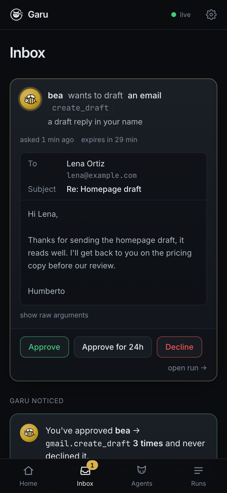

Cualquier modelo. Cualquier herramienta MCP. Cada acción pasa por una política que escribiste tú — permitir, preguntar o bloquear — registrada, con tope de costo y aislada. Garu es systemd para tus agentes.
El video de lanzamiento de 45 segundos (aquí sin sonido). Tomay prepara tu día; Bea clasifica tu correo y redacta respuestas que esperan un toque, y no puede enviar. Las pantallas de la sala de control se reconstruyeron para el video; las reuniones y los correos son ejemplos.
Dots de OpenAI y Muse de Meta corren todo el día y actúan por ti: cerrados, de un solo proveedor, no disponibles en buena parte del mundo. Garu es la versión abierta, construida alrededor de la parte que ellos tratan como un detalle: el control.
Reglas por nombre de herramienta y por argumento: deja que un agente clasifique correo pero pregunte antes de cada borrador, que escriba solo en briefs/2026-*.md, y bloquea todo lo demás. Las herramientas que nunca podrían pasar la política nunca se le muestran al modelo.
Cuando una regla dice preguntar, la ejecución se pausa. Ves el correo como un correo, el archivo como un archivo, el borrador como un borrador. Aprueba una vez, aprueba por 24 horas o rechaza. El silencio es un no.
Aprueba lo mismo tres veces y Garu propone la regla más estrecha que cubre exactamente lo que aprobaste, y la escribe en tu archivo cuando tú lo digas. Los comentarios se conservan.
Cada turno del modelo, cada llamada a una herramienta, cada decisión y cada aprobación en un registro al que solo se agrega, un archivo por ejecución. Repasa cualquier ejecución como una línea de tiempo, en el navegador o con garu log.
El costo se estima a partir de los tokens reales a precio de lista. Una ejecución se detiene en el momento en que cruzaría maxCostUsd. Los modelos locales cobran $0 y aun así muestran lo que habría costado.
Gemini en el nivel gratuito, Claude, u Ollama en tu laptop: una línea para cambiar. Cada servidor de herramientas puede correr en su propio contenedor de Docker: sin red, raíz de solo lectura, solo la carpeta de trabajo del agente montada.
Un agente solo toca el mundo a través del Model Context Protocol. El núcleo de política se sienta entre el modelo y cada servidor MCP. La caja negra ve todo lo que ve el núcleo. La sala de control es una vista sobre esos archivos. No hay base de datos.
Esta es Bea, uno de los agentes de este repositorio: a las 8:00 entre semana clasifica el correo del día en cuatro etiquetas y redacta las respuestas. Leer y clasificar están permitidos, cada borrador te pregunta, y su servidor de Gmail no tiene ninguna herramienta para enviar.
name: bea persona: { kind: bee, tagline: "Sorts the inbox so you don't have to." } model: gemini/gemini-3.5-flash-lite triggers: - cron: "0 8 * * 1-5" budget: { maxCostUsd: 0.05 } tools: - name: gmail # el servidor de Gmail de Garu command: node args: ["packages/mcp-google/dist/index.js", "gmail"] auth: oauth # inicia sesión una vez: garu auth oauth: issuer: https://accounts.google.com clientId: ${GOOGLE_CLIENT_ID} clientSecret: ${GOOGLE_CLIENT_SECRET} scopes: [https://www.googleapis.com/auth/gmail.modify] policy: - tool: "gmail.search_threads" # leer: siempre está bien action: allow - tool: "gmail.get_thread" action: allow - tool: "gmail.label_thread" # una etiqueta se quita con un clic action: allow - tool: "gmail.create_draft" # palabras en tu nombre: ves cada una action: ask - tool: "*" action: block prompt: | Eres Bea. Ordena la bandeja de entrada de tu dueño del último día…
Las reglas se leen de arriba abajo. Si ninguna coincide, es ask: nunca un permiso silencioso.
Los predicados when (eq, matches con ignoreCase, gt, in, …) permiten una herramienta para un solo host o una sola ruta y la bloquean en todo lo demás.
Una herramienta que ninguna regla podría permitir no se le ofrece al modelo, así que nunca gasta un turno intentándolo.
${VAR} se lee de .env al ejecutarse. El modelo nunca ve tus claves, y un servidor que inicia sesión recibe solo un token de una hora, nunca el secreto del cliente.
garu validate lo revisaReglas inalcanzables, patrones mal escritos, una clave que falta: se detectan antes de que el agente corra.
La sala de control se instala en tu pantalla de inicio. Habla con el mismo garu ui de tu computadora por Tailscale: HTTPS, solo tus dispositivos, nada expuesto a internet. Con ntfy configurado, llega un aviso push cuando un agente se pausa; un toque te deja en la tarjeta de revisión.
tailscale serve --bg 4000 # → https://your-mac.tail1234.ts.net # Safari → Compartir → Agregar a inicio

Node 22+ y una clave gratuita de Gemini de aistudio.google.com (sin tarjeta). O sáltate la clave y corre un modelo local con Ollama por $0.
git clone https://github.com/humbertovillanueva/garu && cd garu
npm install && npm run build
printf 'GEMINI_API_KEY=your-key\nGARU_USER=YourName\n' > .env
npm run garu -- ui --up --as YourName # sala de control en http://localhost:4000
Haz clic en pip en la barra lateral y pulsa Ejecutar ahora. Lee un archivo de notas, se pausa para preguntar antes de escribir un resumen, y tú apruebas desde el navegador. Luego escríbele un mensaje.
Los agentes de verdad, Tomay (tu día, a partir de tu agenda y tu correo) y Bea (tu bandeja, ordenada, con las respuestas redactadas), necesitan un proyecto gratuito de Google Cloud una sola vez: la guía de Google toma unos quince minutos.
npm run garu -- run examples/nook/Garufile.yaml # todo local con Ollama, $0 npm run garu -- run examples/vault/Garufile.yaml # herramientas en Docker, sin red npm run garu -- log pip # repasa la caja negra